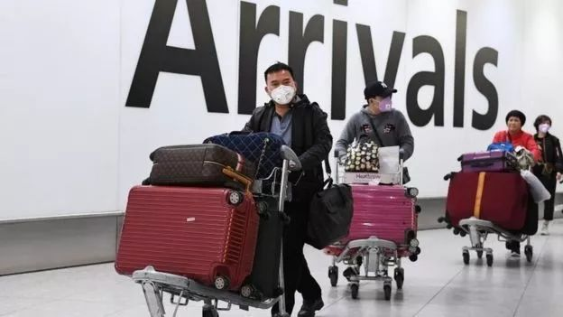

“收留”回不了家的武汉人
原文链接 备份链接 *************▲************* 四川省巴中市巴州区，一辆鄂A车牌（武汉）轿车的车窗上，贴着红岩社区加盖公章的证明，称车主无感冒发烧现象，且正在家自行隔离。 （杜茂林/图） 全文共*4201*字， …

这段时间，除了关于疫情本身的讨论，一些新的话题不断加入。单读征文今天的来信，来自一位选择离开家乡的武汉人。武汉人在外省的处境令人堪忧，从直面病毒的恐慌，到遭遇歧视的愤懑，武汉人不仅是这场疫情中最直接的受害者，还成为后续大量批评的众矢之的。
这封来信向我们呈现了这些离开家乡的武汉人，可能正在面临的真实处境，他们很多人会主动前往当地的医院接受检查或隔离，也愿意配合登记个人信息，但仍在不当的处理和普遍的歧视中，举步维艰。它也提醒我们，在面对这场重大疫情时，每一个个体都是鲜活的生命，每一份善意都弥足珍贵。所有人的命运，此刻都在彼此映照着。
在这次新型肺炎疫情中，你看到了什么？你经历了什么？不论你身在湖北还是其他地方，在城市还是乡村，在什么工作岗位上，都欢迎你和我们分享你看见的人和事。我们需要很多双的眼睛，才能把时代中的危机看得更加真切。
自征文以来，我们收到了大量来稿，如实写下了他们在疫情期间的所见所闻，这会是一份真挚而沉重的纪录，我们会留存它。
投稿邮箱：anonymous@owspace.com

我是武汉人，没有病，也快没有尊严
撰文：绿罗裙
几天前，我要面对的是对可能感染肺炎的恐慌，离开亲人朋友的伤感，新年独处异乡的彷徨。在昨天和今天，我还得面对猜忌，疏离，无处可栖。在联系到了一处愿意让我暂住的朋友住所后，我甚至开心地觉得天无绝人之路，在村里的房檐上坐了一下午，我看着大理的山和云，觉得真美。警察的来到打破了这份短暂的宁静……我今天的遭遇，不经让我疑惑，人民为人的那一份尊严，到底有没有被这些执法人员考虑在内？
我是武汉人，在杭州读书，过年回家待了几天后，疫情的迅速蔓延让人惴惴不安，终于看到了封城的消息，我和其他很多被骂“自私”、“无知”的武汉人一样，匆匆离开了。而很多人不知道的是，在试剂盒紧缺的情况下，许多符合症状的人无法被确诊，报道出来的确诊人数虚低。1 月 20 日之后，每天一睁眼要面对的消息就是一些令人不安的疫情进展，又有多少医务人员感染，又有哪些街道被划为了严重疫区。许多“谣言”都在核实后变成了实情，我也不知道哪些该信哪些不该信。洒水车又从楼下开过，向城市的主干道喷洒着消毒水。

朋友提醒我不要去医院也不要出门。街上的每个人都好像在咳嗽。在这样慌乱又焦虑的情况下看到封城的消息，是的，我走了，在我还没有感冒的症状之前。和许多在深夜看到封城消息的武汉市民一样，我们感到震惊，接着是恐慌。隐约记得前两天的新闻还在说，要护送春运大军回家过年。封城的消息，打乱了所有人的阵脚。
清晨五点的火车站，所有人都戴着口罩，拿着最近的车票，站台上，人们拖着行李箱跑进火车。这一幕深深地刻在我的脑海里。火车上同一车厢的云南姑娘嘱咐我说，到了昆明，别跟人家说你是武汉来的。我没有听，心里认准一个道理：我没有犯错，没必要撒谎，撒谎会是犯的第一个错。当时的我没有意识到，这样的坦然要建立在彼此信任的基础上，我信任对方，而我的对面，却站满了猜忌和疑虑。
23 号早晨我到了昆明，同一列火车上，从武汉来的人不少，他们下了火车，隐入人群。我的感受是害怕，我确实没有任何症状，但如果没有症状的病毒携带者也可以传染其他人呢？但这种说法只是为了让更多的武汉人留在武汉呢？当时的我惊恐不安，对很多东西存疑，只立下了一条原则：对任何人不隐瞒我的来历，配合当地旅店和政府的一切调查和登记。这个底线是对我背井离乡的负罪感的安慰，也是我最微不足道但真诚的善良和责任感。到了住处，很快有警察同志来登记了我的信息，他们说希望我理解，我说大家都害怕，我一定配合。第二天，青旅告知我如果要住多人间必须搬到一个房间，因为那里也有一位从武汉来的旅客。我不解，如果这位旅客是感染者，我住过去也感染了怎么办呢，难道武汉人之间相互传染比较容易区分和治疗吗？怀着疑虑的我又订了一晚单人间后，在昆明坐上了去大理的火车。
动车上，朋友打来视频电话询问我的状况，她们情绪不太好，人的终极恐惧就是对死亡的恐惧，而此刻这种恐惧无孔不入地笼罩着她们。座位旁的夫妻听说我是武汉来的之后，就去到了别的座位，爸爸跟我打趣，说我们现在都是“瘟神”。到了大理，我依然没有隐瞒，在古城的青旅我甚至十分感动，前台的姑娘给我安排了一个单人间，说我们武汉来的都不容易。我激动地写下：所有理智的善良往往都做了最坏的预想，因此他们很少失望。于前台姑娘而言，她的最坏预想大概是我是肺炎感染者，给我一间单间隔离做好防护，好让今晚的我有处可去；我的最坏预想是在告知对方之后被拒绝。当时的我们，都没有让对方失望。隐约记得一位作家说过，凌冽的寒风只会让人竖起衣领，温暖的太阳照过来，人们会自己脱下厚重的大衣。我想就应该这样。

在去大理的动车上，我还在线咨询了医生，医生告诉我保护好自己，暂时不需去医院检查，但收到这份善意后我仍感觉没有底气，晚上我十分配合地去了古城的医院，医生的第一句话是：我们现在没法确诊。我印象尤深。做了血液检测后医生说我目前一切正常，又量了体温，在医院登好了记，但前台的姑娘仍告知我只能留我一晚。我心里明白，这个病有潜伏期，今天查不出来不代表绝对安全。走进医院就像走进审判庭一样，等待结果就像等待宣判一样。医生告诉了我，现在湖北籍的人员一律安排住宿，并且给了我酒店的联系方式，我千恩万谢，想到还在武汉疫情一线的医生们，觉得大过年的，给人家添了麻烦。
我的愤懑从这个酒店开始。早上我打去电话咨询，说明情况后被告知酒店需自费，“我们提供的报价是 358 一晚”，我在脑袋里快速过了一遍，这个价格大概是我浏览过的古城青旅多人间的 9 倍，是古城普通单人间的 2 倍。但它现在是我的唯一选择，其他的酒店接到通知，不收湖北籍，暂停所有对外来客人的接待。我无处可去，联系了一个在大理待过一阵子的德国朋友，他告诉我他曾待过的地方，联系了这个朋友后，对方欣然接受我的留宿。直到此时，我仍感觉生活真好，但对自己武汉的来历产生了顾虑，它差点把我带到了走投无路的境地。
走投无路的境地开始了。同是留宿在这个朋友家的一对夫妻，知道了我的来历后马上秘密报了警，那时我甚至还觉得我有医院的诊断，有透明的行踪和配合的态度，一切都不会太难过。朋友的住处在一个大理的村里，村委的人很快来登了记，我仍然配合着说明了一切情况。我觉得自己好像有罪，在朋友家借住还会被举报。村委的人走后我就坐上了房檐，看着自然不可捉摸的美景，百感交集。然后我就等到了气势汹汹的警察，告知我订今晚的车票于明天离开大理。这触到了我有关讲道理的底线，我跟他们解释了所有的情况，酒店的价格不合理、医院没有要求我留在医院观察、借住在朋友家为什么要求我离开。换来的是愈加坚决的态度，“我们只是执行决策，希望你能够配合。”当问及酒店价格时，我又被告知这需要我自己向相关负责部门反映，他们不予干预。我提了一个最现实的问题：我对酒店价格不满意，不想在酒店待，去和所谓的相关部门交涉的时候，我住在哪？我的行李放在哪？没有商议和解决办法，只有一句：“不然我们会有我们的办法。”当时的我深感委屈，起了反抗的冲动，打开录音后，录到的是对方程式化的官方回答。向周围求助后，得到的也不是支持，而是亲人好友的劝退。
我仍选择写下这篇文章，写给我自己，也写给武汉人，更写给那些仍在奋战的人们。我理解了，配合了，现在只想守住我作为人最后的尊严，而不是像老鼠一样被赶来赶去。曾经的我受着心理疾病的困扰，后来逐渐走出来，我从未如此渴望美和生活，刚刚我甚至想到如果以死来反抗，会不会激起一些浪花？曾经我最擅长逃避，逃到一个人的世界里，逃到症状里，我从未如此坚定地坚守什么。我仍害怕，害怕死亡也石沉大海。我也相信，我相信文字和良知。
现在，我想要提出以下问题：
1. 酒店作为湖北籍人员的唯一去处，为何需要如此高的自费价格？
2. 我借住在朋友家，做好防护自行隔离，为什么被强制要求离开？
3. 作为武汉人的我们，因为这场疫情，就要被区别对待吗？
我对忧心忡忡的爸爸说，我尽全力再试一次，如果毫无回应，我不再说什么，选择服从。此刻的我作为一名武汉人，看着网上不停在呼吁的“隔离病毒别隔离爱”，绝望又寒心。
1 月 27 日，23 时 01 分
后续
这件事情在今早发生了转折，我把行李打包好在楼下等待时，警察来了，表示经过讨论，鉴于我尚无症状以及离汉有一段时间，决定把我留村察看。并且，同住的一对夫妻，房主都实行隔离，并且在村里配备了医务人员以防紧急状况。昨晚，警察和我也互致了歉意与理解。收到单读的回复后，首先我担忧这篇于情绪激动时写下的文章，在问题得到解决后是否会对当地造成舆论上的压力，但我想，也许也还有同是湖北籍人员正面临困境，需要一些声音，毕竟我这样的经历已不是新闻。接着我再次致电那家酒店，他们对湖北籍人员的房间降到了 200 元一晚。这一切的转变发生得如此迅速，我相信在收到了相应的反馈和质疑后，当地相关部门一定是在昨夜经过了商议，才做出以上调整。不知道我昨天匆匆发表在朋友圈又匆匆删掉的文章，与这些有无联系，只感叹愤怒也许源于无能，但发声确实需要勇气。疫情严重，这是拿着放大镜看验人性的时候，我只是一个大三在读的青年学生，时常有着种种叛逆和思索，此时是这么多天以来第一次感觉安定，也许”我们”的到来打破了其他地区同胞的那份安定，我深表歉意。自觉做好防护工作和隔离的武汉人，不是怪物，他们的家乡正经受着劫难，亲人朋友也惊惧不安。我想一个个体的归属感不仅能来源于血亲或者家庭。此刻写着回信的我正坐在房檐上看着大理漫天的星星，您知道吗，原来一直望着天上的星星，看到的星星就会变多，而病毒永远没法遮蔽星空。
1 月 28 日

点击小程序下单，购买最新上市的《单读 23 · 破碎之家：法国文学特辑》
原文链接 备份链接 *************▲************* 四川省巴中市巴州区，一辆鄂A车牌（武汉）轿车的车窗上，贴着红岩社区加盖公章的证明，称车主无感冒发烧现象，且正在家自行隔离。 （杜茂林/图） 全文共*4201*字， …
原文链接 备份链接 据相关数据统计，春节前，有近500万人离开武汉，他们中有近30%的人离开湖北，他们或出差、或进行计划许久的旅行，或回家过年，但伴随着疫情的加剧，他们成了一群「不被欢迎的人」。 一位武汉的小学老师已经连续三年去厦门过年， …
原文链接 备份链接 本文故事来自一名化名为“平安”的武汉大学生，记述了她从返乡、封城，再到过年所经历的种种。这个特殊的春节，焦虑与希望同在，寂静与喧嚣并存。身处「风暴中心」，从慌乱到乐观，她的心理发生了什么样的变化？让我们一起来看看她过去 …
原文链接 备份链接 图片来源：世卫组织网站 文 | 周航 李晓芳 王彦入 殷盛琳 编辑 | 王珊 这原本应该是趟完美的旅行。 武汉出发，成都集合，沿着318国道，一路往西，大年初一抵达拉萨——在布达拉宫瑰丽光彩的映照下，度过庚子新年的第一 …
原文链接 备份链接 大家好，我是田静。 这几天因为新型冠状肺炎病毒，我恶补了一些相关书籍，再看网上真假难辨的信息，觉得阿尔贝‧加缪的《鼠疫》中说得很对：“我们每个人心里都有瘟疫，没有一个人，这世界上没有一个人是免除得了的。能够对抗瘟疫的， …